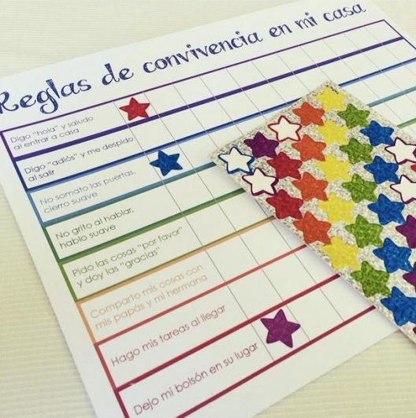
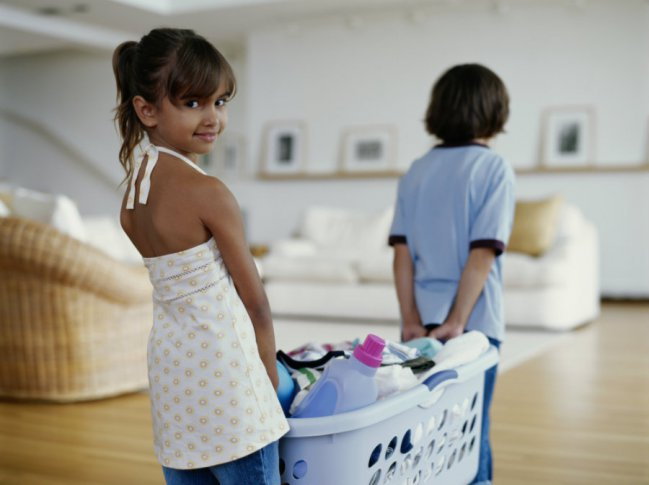

- Conozca el de comportamiento su hijo o hija. Observe el comportamiento de su hija o hijo, en qué lugares se presenta, con qué personas o ante qué situaciones. Lo anterior le permitirá conocer las causas de su comportamiento.La conducta siempre tiene una razón, saber que detona su comportamiento y qué factores hacen que ese comportamiento se mantenga le ayudarán a elegir la manera de modificar dicha conducta de su hijo o hija.
-
Establezca rutinas y hábitos. En los hijos es fundamental generarles hábitos. Por ejemplo, inicie el día de forma menos acelerada, despierte a su hija o hijo de manera amable y respetuosa siempre a la misma hora, establezca una rutina como levantarse, cambiarse, desayunar, cepillarse los dientes y salir a la escuela. Establezca un horario en familia para comer o cenar y hacer tarea.
- Reconozca los comportamientos deseables. Es importante reconocer los logros de las niñas y los niños, por ejemplo: “Hoy hiciste tu tarea muy tranquilo”, enfocarse sólo en lo negativo favorece que se sientan desmotivados.
- Establezca reglas en casa. Es importante que las niñas y los niños sepan qué reglas existen en casa y no solo se dé por entendido que las conoce, por ejemplo: Recoger los juguetes después de jugar, recoger sus platos después de comer, poner su ropa sucia en el cesto, respetar a las personas, etc. Es importante tener en cuenta el otorgar reglas de acuerdo a la edad de tu hijo o hija, ya que asignar una tarea le permite identificar el valor de sus responsabilidades.


- Elija consecuencias efectivas. Una consecuencia efectiva es aquella que tiene un impacto en la modificación de un comportamiento no deseado. Elegir la consecuencia adecuada implica conocer a tu hijo o hija, es decir conocer sus gustos y actividades favoritas. Una buena estrategia es que la consecuencia debe ser inmediata y debe ser de acuerdo a la conducta presentada. Por ejemplo, no acomodo su uniforme, la consecuencia podría ser que se quede sin su celular en todo el día.
- Tiempo para jugar o realizar actividades juntos. Realizar actividades con ellos es la mejor recompensa que pueden tener. Aproveche algunos de sus tiempos libres, deje su celular de lado por un momento o deténgase en alguna actividad y tome un tiempo para que hagan algo juntos.